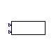
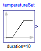

Table of Contents
- User's Guide
- Blocks
- Conditions
- Assemblies
- Regions
- Subregions
- Phases
- Species
- Chemistry
- Connectors
- Characteristics
- Units
- Quantities
- Utilities
- Icons
Download
- Latest: v0.2.2 (2014-01-17)
FCSys.Characteristics.Examples
ExamplesInformation
Extends from Modelica.Icons.ExamplesPackage (Icon for packages containing runnable examples).Package Content
| Name | Description |
|---|---|
| Evaluate the material properties over varying temperature and pressure | |
| Model that implements the functions of the Characteristic package | |
| Evaluate the saturation pressure curve of H2O | |
| Evaluate the equilibrium hydration of the ionomer as a function of relative humidity | |
| Evaluate the potential of an H2/O2 cell as a function of temperature | |
| Evaluate the Leverett J function from [Wang2001] | |
| Evaluate the latent heat of vaporization of H2O | |
| Test the mobility factors | |
| Evaluate the surface tension of H2O using the model of Garai |
 FCSys.Characteristics.Examples.Correlations
FCSys.Characteristics.Examples.Correlations
Evaluate the material properties over varying temperature and pressure

Information
Extends from Modelica.Icons.Example (Icon for runnable examples).
Parameters
| Type | Name | Default | Description |
|---|---|---|---|
| TemperatureAbsolute | T_start | 273.15*U.K | Initial temperature [L2.M/(N.T2)] |
| TemperatureAbsolute | T_stop | 373.15*U.K | Final temperature [L2.M/(N.T2)] |
| PressureAbsolute | p_start | U.atm | Initial pressure [M/(L.T2)] |
| PressureAbsolute | p_stop | U.atm | Final pressure [M/(L.T2)] |
Modelica definition
model Correlations "Evaluate the material properties over varying temperature and pressure" extends Modelica.Icons.Example; parameter Q.TemperatureAbsolute T_start=273.15*U.K "Initial temperature"; parameter Q.TemperatureAbsolute T_stop=373.15*U.K "Final temperature"; parameter Q.PressureAbsolute p_start=U.atm "Initial pressure"; parameter Q.PressureAbsolute p_stop=U.atm "Final pressure"; // Property models PropertiesRT 'C+'(redeclare package Data = Characteristics.'C+'.Graphite); PropertiesRT 'SO3-'(redeclare package Data = Characteristics.'SO3-'.Ionomer); PropertiesRT 'e-'(redeclare package Data = Characteristics.'e-'.Graphite); PropertiesRT 'H+'(redeclare package Data = Characteristics.'H+'.Ionomer); PropertiesRT H2(redeclare package Data = FCSys.Characteristics.H2.Gas); PropertiesRT H2IG(redeclare package Data = FCSys.Characteristics.H2.Gas (b_v=[ 1], n_v={-1,0})) "H2 as ideal gas"; PropertiesRT H2O(redeclare package Data = FCSys.Characteristics.H2O.Gas); // Note that H2O.p diverges from p in Dymola 2014 due to the large // coefficients in the second row of H2O.Data.b_v, which cause numerical // errors. PropertiesRT H2OLiquid(redeclare package Data = Characteristics.H2O.Liquid); PropertiesRT N2(redeclare package Data = FCSys.Characteristics.N2.Gas); PropertiesRT O2(redeclare package Data = FCSys.Characteristics.O2.Gas); // Conditions protected Connectors.RealOutputInternal T(unit="L2.M/(N.T2)",displayUnit="K") "Temperature"; Connectors.RealOutputInternal p(unit="M/(L.T2)") "Pressure"; protected Modelica.Blocks.Sources.Ramp rampTemperature( final height=T_stop - T_start, final offset=T_start, duration=1); Modelica.Blocks.Sources.Ramp rampPressure( final height=p_stop - p_start, final offset=p_start, duration=1); "FCSys.Characteristics.Examples.Properties, with round-trip pressure calculation" extends FCSys.Characteristics.Examples.Properties; Q.PressureAbsolute p_RT=Data.p_Tv(T, v) if Data.isCompressible; end PropertiesRT; equation connect(rampTemperature.y, T); connect(rampPressure.y, p); connect(T, 'C+'.T); connect(p, 'C+'.p); connect(T, 'SO3-'.T); connect(p, 'SO3-'.p); connect(T, 'e-'.T); connect(p, 'e-'.p); connect(T, 'H+'.T); connect(p, 'H+'.p); connect(T, H2.T); connect(p, H2.p); connect(T, H2IG.T); connect(p, H2IG.p); connect(T, H2O.T); connect(p, H2O.p); connect(T, H2OLiquid.T); connect(p, H2OLiquid.p); connect(T, N2.T); connect(p, N2.p); connect(T, O2.T); connect(p, O2.p); end Correlations;
 FCSys.Characteristics.Examples.Properties
Model that implements the functions of the Characteristic package
Information
Extends from FCSys.Icons.Blocks.ContinuousShort (Short icon for a continuous block).
Parameters
| Type | Name | Default | Description |
|---|---|---|---|
| replaceable package Data | Characteristics.BaseClasses…. | Characteristic data | |
Connectors
| Type | Name | Description |
|---|---|---|
| replaceable package Data | Characteristic data | |
| input RealInput | T | Temperature [L2.M/(N.T2)] |
| input RealInput | p | Pressure [M/(L.T2)] |
Modelica definition
model Properties "Model that implements the functions of the Characteristic package" extends FCSys.Icons.Blocks.ContinuousShort; replaceable package Data = Characteristics.BaseClasses.Characteristic constrainedby Characteristics.BaseClasses.Characteristic "Characteristic data"; Connectors.RealInput T(unit="L2.M/(N.T2)") "Temperature"; Connectors.RealInput p(unit="M/(L.T2)") "Pressure"; Q.MassSpecific m "Specific mass"; Q.LengthSpecific d "Specific diameter"; Q.VolumeSpecific v "Specific volume"; Q.CapacityThermalSpecific c_p "Isobaric specific heat capacity"; Q.CapacityThermalSpecific c_v "Isobaric specific heat capacity"; Q.Potential g "Gibbs potential"; Q.Potential h "Specific enthalpy"; Q.NumberAbsolute s "Specific entropy"; Q.Resistivity eta "Fluidity"; Q.ResistivityThermal theta "Thermal resistivity"; Q.PressureReciprocal beta "Isothermal compressibility"; Q.TimeAbsolute tauprime "Phase change interval"; Q.Mobility mu "Mobility"; Q.TimeAbsolute nu "Thermal independity"; equation m = Data.m; d = Data.m; v = Data.v_Tp(T, p); c_p = Data.c_p(T, p); c_v = Data.c_v(T, p); g = Data.g(T, p); h = Data.h(T, p); s = Data.s(T, p); eta = Data.eta(T, v); theta = Data.theta(T, v); beta = Data.beta(T, p); tauprime = Data.tauprime(T, v); mu = Data.mu(T, v); nu = Data.nu(T, v); end Properties;
 FCSys.Characteristics.Examples.SaturationPressure
FCSys.Characteristics.Examples.SaturationPressure
Evaluate the saturation pressure curve of H2O

Information
See also Subregions.Examples.PhaseChange.Evaporation.
Extends from Modelica.Icons.Example (Icon for runnable examples).Modelica definition
model SaturationPressure "Evaluate the saturation pressure curve of H2O" import FCSys.Characteristics.H2O.Liquid; import FCSys.Characteristics.H2O.Gas; package IdealGas = FCSys.Characteristics.H2O.Gas (b_v=[1], n_v={-1,0}); extends Modelica.Icons.Example; Q.TemperatureAbsolute T "Temperature"; Q.PressureAbsolute p_sat(start=U.kPa) "Saturation pressure via chemical equilibrium"; Q.PressureAbsolute p_sat_IG(start=U.kPa) "Saturation pressure of ideal gas via chemical equilibrium"; output Q.PressureAbsolute p_sat_MSL=Characteristics.H2O.p_sat(T) "Saturation pressure via Modelica.Media"; output Q.Number T_degC=U.to_degC(T) "Temperature in degree Celsius"; Modelica.Blocks.Sources.Ramp temperatureSet( height=99*U.K, duration=10, offset=274.15*U.K); equation T = temperatureSet.y; Liquid.g(T, p_sat) = Gas.g(T, p_sat); Liquid.g(T, p_sat_IG) = IdealGas.g(T, p_sat_IG); end SaturationPressure;
FCSys.Characteristics.Examples.HydrationLevel
Evaluate the equilibrium hydration of the ionomer as a function of relative humidity

Information
See also Subregions.Examples.PhaseChange.Hydration.
Extends from Modelica.Icons.Example (Icon for runnable examples).Modelica definition
model HydrationLevel "Evaluate the equilibrium hydration of the ionomer as a function of relative humidity" extends Modelica.Icons.Example; import Absorbed = FCSys.Characteristics.H2O.Ionomer; package Gas = FCSys.Characteristics.H2O.Gas (b_v=[1], n_v={-1,0}); import Solid = FCSys.Characteristics.'SO3-'.Ionomer; import FCSys.Characteristics.H2O.p_sat; Q.Number RH "Relative humidity"; output Q.Number lambda=Solid.v_Tp()/Absorbed.v_Tp(environment.T, p_abs) "Hydration due to chemical equilibrium"; output Q.Number lambda_Springer=FCSys.Characteristics.H2O.lambda_eq(RH) if environment.analysis "Hydration according to Springer et al. correlation"; Q.PressureAbsolute p_abs "H2O pressure in the ionomer"; Modelica.Blocks.Sources.Ramp humiditySet( height=-0.999, offset=1, duration=10) "Set the relative humidity"; inner Conditions.Environment environment(T=303.15*U.K); equation RH = humiditySet.y; Absorbed.g(environment.T, p_abs) = Gas.g(environment.T, RH*p_sat(environment.T)); end HydrationLevel;
FCSys.Characteristics.Examples.CellPotential
Evaluate the potential of an H2/O2 cell as a function of temperature

Information
Extends from Modelica.Icons.Example (Icon for runnable examples).Modelica definition
model CellPotential "Evaluate the potential of an H2/O2 cell as a function of temperature" import FCSys.Characteristics.H2O.Liquid; import H2O = FCSys.Characteristics.H2O.Gas; import H2 = FCSys.Characteristics.H2.Gas; import O2 = FCSys.Characteristics.O2.Gas; import H2OLiquid = FCSys.Characteristics.H2O.Liquid; package H2OIG = FCSys.Characteristics.H2O.Gas (b_v=[1], n_v={-1,0}); package O2IG = FCSys.Characteristics.O2.Gas (b_v=[1], n_v={-1,0}); package H2IG = FCSys.Characteristics.H2.Gas (b_v=[1], n_v={-1,0}); extends Modelica.Icons.Example; output Real T_degC=U.to_degC(T) "Temperature in deg C"; output Q.Potential w_gas=0.5*H2.g(T, environment.p_dry) + 0.25*O2.g(T, environment.p_O2) - 0.5*H2O.g(T, environment.p_H2O) "Cell potential with H2O as gas"; output Q.Potential w_IG=0.5*H2IG.g(T, environment.p_dry) + 0.25*O2IG.g(T, environment.p_O2) - 0.5*H2OIG.g(T, environment.p_H2O) "Cell potential with ideal gases"; output Q.Potential w_liq=0.5*H2.g(T, environment.p_dry) + 0.25*O2.g(T, environment.p_O2) - 0.5*H2OLiquid.g(T, environment.p) "Cell potential with H2O as liquid"; Q.TemperatureAbsolute T "Temperature"; Modelica.Blocks.Sources.Ramp temperatureSet( height=99*U.K, duration=10, offset=274.15*U.K); inner Conditions.Environment environment; equation T = temperatureSet.y; end CellPotential;
FCSys.Characteristics.Examples.Leverett
Evaluate the Leverett J function from [Wang2001]

Information
Please see H2O.J().
Extends from Modelica.Icons.Example (Icon for runnable examples).Modelica definition
model Leverett "Evaluate the Leverett J function from [Wang2001]" extends Modelica.Icons.Example; output Q.NumberAbsolute s=saturationSet.y "Liquid saturation"; output Q.NumberAbsolute J=FCSys.Characteristics.H2O.J(s) "Result of Leverett correlation"; Modelica.Blocks.Sources.Ramp saturationSet(height=1, duration=1) "Set the saturation"; inner Conditions.Environment environment(T=303.15*U.K); end Leverett;
FCSys.Characteristics.Examples.LatentHeat
Evaluate the latent heat of vaporization of H2O

Information
See also Subregions.Examples.PhaseChange.Condensation.
Extends from Modelica.Icons.Example (Icon for runnable examples).
Parameters
| Type | Name | Default | Description |
|---|---|---|---|
| PressureAbsolute | p | U.atm | Pressure of the liquid (and total pressure of the gas) [M/(L.T2)] |
Modelica definition
model LatentHeat "Evaluate the latent heat of vaporization of H2O" import FCSys.Characteristics.H2O.Liquid; import FCSys.Characteristics.H2O.Gas; extends Modelica.Icons.Example; parameter Q.PressureAbsolute p(displayUnit="atm") = U.atm "Pressure of the liquid (and total pressure of the gas)"; Q.PressureAbsolute p_sat(displayUnit="atm") "Saturation pressure"; Q.TemperatureAbsolute T "Temperature"; output Q.Number T_degC=U.to_degC(T) "Temperature in degree Celsius"; output Q.Potential h_g(displayUnit="J/mol") = Gas.h(T, p_sat) "Specific enthalpy of the saturated vapor"; output Q.Potential h_l(displayUnit="J/mol") = Liquid.h(T, p) "Specific enthalpy of the liquid"; output Q.Potential h_gl(displayUnit="J/mol") = h_g - h_l "Specific enthalpy of vaporization"; output Q.Velocity2 hbar_gl(displayUnit="J/g") = h_gl/Liquid.m "Massic enthalpy of vaporization"; Modelica.Blocks.Sources.Ramp temperatureSet( height=99*U.K, duration=10, offset=274.15*U.K); equation T = temperatureSet.y; Gas.g(T, p_sat) = Liquid.g(T, p); end LatentHeat;
FCSys.Characteristics.Examples.MobilityFactors
Test the mobility factors
Information
Extends from Modelica.Icons.Example (Icon for runnable examples).Modelica definition
model MobilityFactors "Test the mobility factors" extends Modelica.Icons.Example; import FCSys.Characteristics.MobilityFactors.*; output Q.NumberAbsolute H2_H2O=k_H2_H2O() "Between H2 and H2O"; output Q.NumberAbsolute H2O_N2=k_H2O_N2() "Between H2O and N2"; output Q.NumberAbsolute H2O_O2=k_H2O_O2() "Between H2O and O2"; output Q.NumberAbsolute N2_O2=k_N2_O2() "Between N2 and O2"; end MobilityFactors;
FCSys.Characteristics.Examples.SurfaceTension
Evaluate the surface tension of H2O using the model of Garai
Information
See also Subregions.Examples.PhaseChange.Condensation.
Extends from Modelica.Icons.Example (Icon for runnable examples).
Parameters
| Type | Name | Default | Description |
|---|---|---|---|
| PressureAbsolute | p | U.atm | Pressure of the liquid (and total pressure of the gas) [M/(L.T2)] |
Modelica definition
model SurfaceTension "Evaluate the surface tension of H2O using the model of Garai" import FCSys.Characteristics.H2O.Liquid; import FCSys.Characteristics.H2O.Gas; extends Modelica.Icons.Example; parameter Q.PressureAbsolute p(displayUnit="atm") = U.atm "Pressure of the liquid (and total pressure of the gas)"; Q.PressureAbsolute p_sat(displayUnit="atm") "Saturation pressure"; Q.TemperatureAbsolute T "Temperature"; Q.TemperatureAbsolute T_sat(start=373.15*U.K) "Saturation temperature"; output Q.Number T_degC=U.to_degC(T) "Temperature in degree Celsius"; output Q.Potential h_gl(displayUnit="J/mol") = Gas.h(T, p_sat) - Liquid.h(T, p) "Specific enthalpy of vaporization"; output Q.SurfaceTension gamma=(h_gl - T_sat)/(2*U.pi*Liquid.d^2*U.q) "Surface tension"; Modelica.Blocks.Sources.Ramp temperatureSet( height=99*U.K, duration=10, offset=274.15*U.K); equation T = temperatureSet.y; Gas.g(T_sat, p) = Liquid.g(T_sat, p); Gas.g(T, p_sat) = Liquid.g(T, p); end SurfaceTension;
 FCSys.Characteristics.Examples.Correlations.PropertiesRT
FCSys.Characteristics.Examples.Correlations.PropertiesRT
FCSys.Characteristics.Examples.Properties, with round-trip pressure calculation

Information
Extends from FCSys.Characteristics.Examples.Properties (Model that implements the functions of the Characteristic package).
Parameters
| Type | Name | Default | Description |
|---|---|---|---|
| replaceable package Data | Characteristics.BaseClasses…. | Characteristic data | |
Connectors
| Type | Name | Description |
|---|---|---|
| input RealInput | T | Temperature [L2.M/(N.T2)] |
| input RealInput | p | Pressure [M/(L.T2)] |
Modelica definition
model PropertiesRT "FCSys.Characteristics.Examples.Properties, with round-trip pressure calculation" extends FCSys.Characteristics.Examples.Properties; Q.PressureAbsolute p_RT=Data.p_Tv(T, v) if Data.isCompressible; end PropertiesRT;